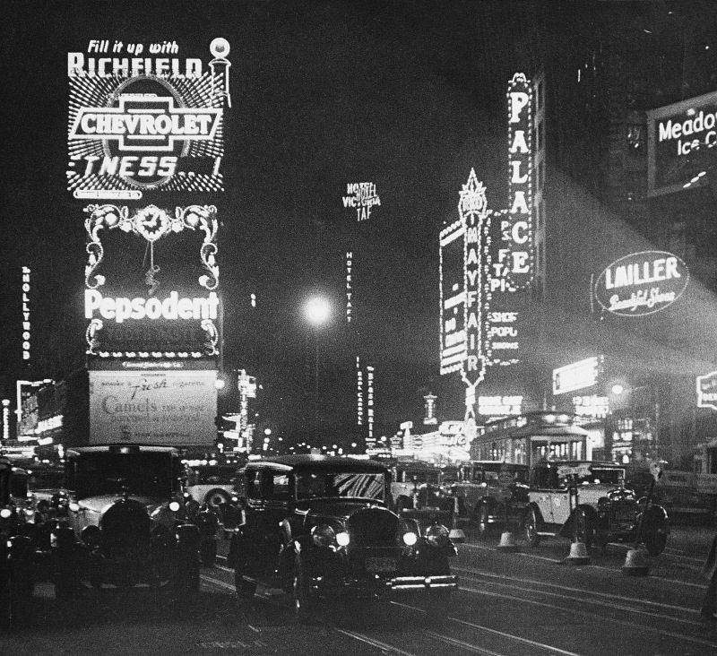
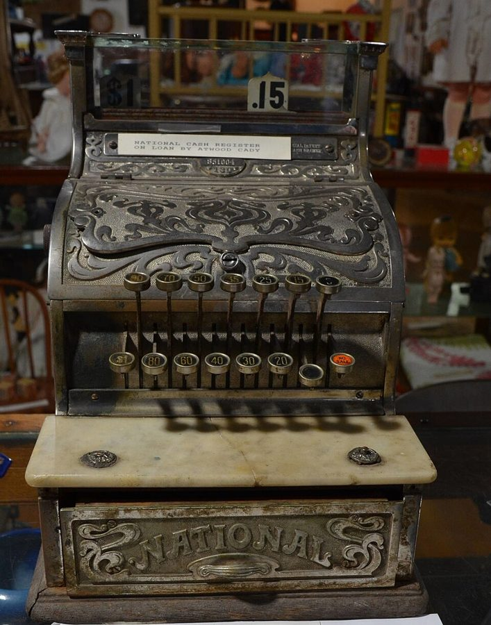

读之前
这一页是报告 11 的前半：5 月 1 日到 10 日，五条，手术后快两个月。开头那天晚上，查理刚和 Miss Kinnian 看完电影回来。拼写和标点已经挑不出错，读起来像一本普通小说，难处换成了口语、弦外之音，和他自己也说不清的感情。读的时候抓两条线：一条是他和 Alice 之间，一条是他越来越聪明以后，在面包店和实验室里看人、看事的眼光。
32 岁，拼写已经全对。想出揉面机的新摆法，又涨了工资，Donner 还要让他进面包师工会，可同事开始躲他、敌视他。偷听到 Nemur 和 Strauss 为要不要六周后就在芝加哥的大会上发表吵架，第一次把他们看成两个普通人。常去大学的咖啡馆听学生争论。梦里想起父母叫 Rose 和 Matt，却看不清他们的脸。他想请 Miss Kinnian 看场电影，庆祝加薪。
读的时候带着这几个问题。不用先找答案，读完回来对照「检查一下理解」。
查理凭什么说那部心理片「是假的」？你同意他的标准吗？§1
留意「我是一个人」这个意思在这一页出现了几次：每次是写给谁看、说给谁听，为什么非说不可。§2 §5
柜台前的那一段，把查理亲眼看见的、只是听见的、自己推出来的分开。§3
分节地图
这一页有五条带日期的报告。读完一条打个勾；每条下面的英文是那一条开头的几个词，在 Kindle 里搜它就能跳过去。全页约 4900 词，一次坐下就能读完。
5 月 1 日约 1800 词 Why haven’t I ever noticed how … 一整晚。留意他笔下的称呼什么时候从 Miss Kinnian 变成了 Alice。 5 月 3 日约 800 词 One of the things that confuses … 一个噩梦，接着是自由联想。留意梦里的东西在后面的联想里又出现在哪。 5 月 8 日约 700 词 Even now that I have learned … 在店面的柜台前。留意哪些是他亲眼看见的，哪些是推出来的。 5 月 9 日约 100 词 I can’t sleep. This has gotten … 只有几行。留意他把两边的理由各列了什么。 5 月 10 日约 1400 词 I asked Professor Nemur about it, … 留意他先后问了谁、各人怎么说，以及这一晚他自己说出了什么。
背景：书里默认你知道的事
按在书里出现的顺序排，标题前是节号。人名后面括号里是中译本的译名，读者想对照译本时用。
§1 查理身边的人这一页出场的多是老面孔。卡片只写到报告 10 为止你知道的事。
Alice Kinnian 艾丽斯·纪尼安 Beekman 学院成人班的老师，手术前就教查理读写，手术后常来教他。查理一直叫她 Miss Kinnian；报告 10 里他想请她看电影，庆祝加薪。
Professor Nemur 尼姆教授 心理学教授，实验的主持人。报告 10 里他说自己是这个项目的资深成员，坚持六周后就在芝加哥的大会上发表，说「现在什么都不会出错了」。
Dr. Strauss 斯特劳斯医生 神经外科兼精神科医生，给查理做了手术，也定期和他做谈话治疗。报告 10 里他认为现在发表太早：查理还在变。
Algernon 阿尔吉侬 先做了同样手术的小白鼠，走迷宫的对手。3 月 29 日查理第一次赢了它。
§1 两片连映和时代广场§1 里查理说起 the first picture、the second picture。1930 到 50 年代，美国很多电影院一张票连放两部片子（double feature），常是一部大片配一部小成本片，所以一晚上看两部是平常事。时代广场（Times Square）在曼哈顿中城，百老汇大道和第七大道在这里斜着交叉，四周是剧院、影院和巨大的灯光广告牌，夜里亮如白昼。

百老汇的夜景（时代广场）。Fritz Block 摄，说明页标的年份是 1931 年，比书里早了三十来年，那时的灯牌已经是这个样子。Fritz Block，公有领域，维基共享资源 §1 好莱坞的「心理片」二战前后，精神分析在美国很时髦，好莱坞拍了不少拿它做卖点的片子：主角心里有个结，靠精神科医生或者一个关键的梦，挖出被压下去的童年记忆，结一解开，问题跟着就没了。希区柯克（Alfred Hitchcock）1945 年的《爱德华大夫》（Spellbound）就是有名的一部。§1 的第二部片子书里没给片名，写的就是这一类。查理这时正躺在 Strauss 的沙发上做谈话治疗，挖自己的童年，读的时候留意他怎么看这种情节。
§1 曼哈顿的街、大道和自助餐馆曼哈顿的路大体是棋盘：南北向的叫大道（Avenue），东西向的叫街（Street），都按数字排，越往北街号越大；百老汇是少数斜着穿过去的老路。所以书里只说「四十五街」「七十七街」，纽约读者就知道大概在哪一带。cafeteria 是自助餐馆：进门拿托盘，沿着柜台排队挑菜、付钱，自己端到桌上，便宜、快，当时纽约很多。
中央公园
往北一直到 110 街
42 街 45 街 59 街 77 街
百老汇
时代广场
第八大道 第七大道
第六大道 第五大道
北 ↑
本站示意图：§1 提到的几条街大概在哪，不按比例。中央公园两侧都有 77 街，书里没说是哪一侧；45 街上的自助餐馆，书里也没说在哪一段。 §2 童谣 Three Blind Mice《三只瞎老鼠》是英语国家的孩子都会唱的童谣，也是一首轮唱曲：三只瞎老鼠追着农夫的妻子跑，她拿切肉刀砍掉了它们的尾巴。词听着残忍，调子却轻快，孩子们唱得高高兴兴。最早的版本印在 1609 年 Thomas Ravenscroft 编的歌集 Deuteromelia 里，那时的词和今天通行的不一样。§2 里它整首冒了出来，原书排成斜体。
§3 面包店的柜台和收银机Donner 面包店前面是店面，后面是作坊。查理平时在后面打杂、送货、开揉面机，§3 里他在前面店面帮忙。柜台后面是收银机：店员按键打出这一笔的金额，顶上的玻璃窗里翻出数字给顾客看，抽屉弹开找零。物价可以这样比：按美国消费物价指数，1960 年代前期的 1 美元约合今天的 10 美元出头。§3 里一个生日蛋糕卖 3.95 美元。
Mr. Donner 唐纳先生 店主。十七年前查理的 Uncle Herman 把他领到这里。报告 9、10 里给查理涨了工资、发了奖金，还要让他进面包师工会。
Gimpy 金皮 面包师傅，走路一瘸一拐（gimpy 是俚语「瘸腿的」），报告 10 写他穿着矫形靴。报告 10 的回忆里，他和 Frank 教查理搓面包卷，最后把那个铜坠子丢给了他，查理说那是件好心的事。

National Cash Register 公司造的收银机，在美国一家社区博物馆展出，说明页标的年份是 1913 年。按下按键，顶上的窗里就翻出这一笔的金额。作者不详，公有领域，维基共享资源 词与短语
三类：紫边的「查理拼的」是他拼错的词，先写还原的拼法；黄边的「每个字都认识」是熟词生义、俚语、别人话里的弦外之音；其余是这里用法特别的词。斜体小字是原句里的几个词，在 Kindle 里搜它就能找到原文。这一页查理已经不拼错了，所以没有紫边的词条。
§1 5 月 1 日
pigeon-soft
… She has pigeon-soft brown eyes …
像鸽子一样柔和的
pigeon（鸽子）加 soft，形容眼神温柔。紧跟着的 feathery（羽毛似的）还是鸟的比方。
picture
… The first picture had been a …
电影，一部片子
picture 在口语里常指 motion picture，就是 movie。这一晚连看了两部，见「背景」。
G.I.
… the G.I. goes back to Europe …
美国大兵
一般认为来自 government issue（军方配发的东西），二战时成了美国士兵的通称。
pat
… It was pat and cheap, and …
（情节）太顺溜、来得太容易
pat 作形容词是「过分利落、现成的」，cheap 在这里是「廉价、低档的手法」。同一条后面 a pat of butter 里的 pat 是另一个词义。
make-believe
… It’s a world of make-believe.
虚构，假装出来的东西
名词。§2 里还有动词的用法 make believe（假装）。
take in
… waved her hand to take in all …
（手一挥）把……都算进来
take in 有「包括、囊括」的意思：她一挥手，把周围的霓虹和灯光全指了进去。译本：「挥着手臂来遮挡周遭的霓虹灯与炫光」。把 take in 读成了挡住，和她接着夸他开始看见表面后面的东西，就接不上了。
Oh, come on now
… Oh, come on now. I don’t …
得了吧，别这么说
不是「来吧」。被人夸的时候推辞的口气。
on the line
… People on the line who heard …
排在队里的
line 在美国口语里是「队伍」，纽约人说排队常用 on line。这里是自助餐馆里端着托盘排队的人。译本：「都转过头瞪她」。原文是 stare at me：大家看的是被夸成天才的查理。
up there
… As long as he’s up there …
（Algernon）还在高处，还聪明着
字面是「在那上面」。in good shape 是「状况良好」。查理拿老鼠给自己的前景打包票，口气是开玩笑。
depression
… making circular depressions in a pat …
凹痕，压出来的小坑
常见的意思是「抑郁」「萧条」，这里是本义「凹下去的地方」。
a pat of butter
… in a pat of butter and …
一小块黄油
pat 作名词是一小块压平的黄油，餐馆里一人一块。和前面 pat and cheap 的 pat 同形不同义。
but for
… never would have done it but for …
要不是（因为）
but for you ＝ if it weren’t for you。这里的 but 不是「但是」。
puff up
… puffed up my breast pocket handkerchief.
把（西装胸袋的装饰手帕）弄蓬松
当时男人穿西装，左胸口袋常露出一角手帕。替他整领带、弄手帕的是 Alice。
self-conscious
… I made you self-conscious.
不自在，局促
意思是太在意自己在别人眼里的样子，因而手足无措，和「有自知之明」不是一回事。译本：「是我让你变得自觉」。self-conscious 在这里不是「自觉」，是「不自在」。
put someone off
… When she put me off, I …
挡开，回绝（某人）
put off 最常见的意思是「推迟」，也常作「让人反感」；这里是她把他挡了回去。
maternal fussing
… easy answers and maternal fussing.
当妈的那种张罗、操心
fuss 是「为小事忙乱、大惊小怪」。指她替他整领带、弄手帕、一路安慰他。
make someone crawl
… to make her crawl, and then …
让人低声下气、卑躬屈膝
crawl 本义是「爬」。这一句里，打她、让她求饶、抱住她亲她，三个念头挤在一起。
be someone’s worry
… That’s my worry, isn’t it?
是（某人）自己该操心的事
意思接近「这关你什么事」「我自己负责」。§4 他又用这个说法问了自己一次。
follow in someone’s footsteps
… who may follow in your footsteps.
走同一条路，步后尘
这里指以后可能接受同样手术的人。
let someone down easy
… trying to let me down easy.
婉转地拒绝，不让对方太难堪
let someone down 是「让人失望」，加 easy（gently）是「拒绝时手下留情」。译本：「她正试着要我放轻松」。原文是她想把拒绝说得软一点。
make the advances
… the man makes the advances.
（男方）主动示好、追求
报告 9 里 advance 是「升迁」；复数 advances 和 make 连用，是对异性主动表示好感。查理说他是从小说和电影里学的。
§2 5 月 3 日
blank mask
… her face is a blank mask.
一张空白的面具（没有五官、没有表情）
blank 是「空白的」。§1 他刚说过，梦里和回忆里父母的脸都是模糊的。
linoleum
… line-pattern of the kitchen linoleum.
油毡（铺地面的）
二十世纪前半叶美国公寓的厨房、浴室常铺带花纹的油毡。
clothes hamper
… where the clothes hamper is, and …
（带盖的）脏衣篮
hamper 也指野餐用的提篮，这里放的是等着洗的衣服。
go under the knife
… went under the surgeon’s knife.
动手术
固定说法，原文多了 surgeon’s（外科医生的）。这一条里刀出现了好几次，这一处说的是手术。
§3 5 月 8 日
behind someone’s back
… on behind Mr. Donner’s back, I …
背着某人
字面是「在某人背后」，意思是瞒着他。
rush hour
… during the rush hour two days …
（店里）最忙的时候
rush hour 一般指上下班交通高峰，这里借来指店里客人最多的时段。
regular customer
… one of our regular customers—a cake …
熟客，老主顾
regular 在这里是「常来的」，单用 a regular 也指常客。
ring up
… when Gimpy rang up the sale …
在收银机上打出（一笔账）
不是「打电话」。ring 是收银机按键时的铃声。见「背景」。
half-dollar
… slipped the half-dollar into his pocket.
五十美分的硬币
同一句前面说的 a large silver coin 就是它。
undercharge
… He had deliberately undercharged the customer, …
少收（顾客）的钱
under- 是「不足」，和 overcharge（多收）相对。
an understanding
… there had been an understanding between …
默契，私下的约定
不是「理解」。可数的 an understanding 指双方心照不宣的安排。
total
… my mind totaled her purchases to …
加总，算出总数
total 作动词。Involuntarily（不由自主地）说的是他的脑子自己就算了出来。
go-between
… as a go-between to deliver …
中间人，在两边之间跑腿的人
原文 used me 是斜体，加重的是「我」。
split the difference
… they could split the difference?
（这里）把差价平分
这个短语平常的意思是讨价还价时「各让一步、取个中间数」。这里是字面意思：少收的那部分钱，两人分。
clomp
… as he clomped around behind the …
脚步沉重地走
象声词。报告 10 写 Gimpy 走路用的是意思相近的 clump。
§4 5 月 9 日
get to someone
… This has gotten to me.
让人心烦、受不了
不是「到达」。这件事缠着他，让他睡不着。
stand by
… too much to stand by and …
袖手旁观
stand by 也有「待命」「支持」的意思，这里和 see him robbed 连着，是看着不管。
is it my place
… is it my place to inform …
轮得到我（去做）吗
place 在这里是「身份、分内」。It’s not my place 是「这不该我管」。
inform on
… my place to inform on him?
告发，检举（某人）
inform someone 是「告诉某人」，加 on 就成了「去揭发某人」，带贬义。
club foot
… especially with his club foot.
马蹄内翻足
一种先天的足部畸形，脚向内、向下扭。今天大多数在婴儿期就能用一连串石膏矫正过来。报告 10 写 Gimpy 穿着矫形靴。
§5 5 月 10 日
innocent bystander
… I’m an innocent bystander and …
无辜的旁观者
新闻和法律上常用的说法，指碰巧在场、和事情无关的人。
inanimate object
… I’m not an inanimate object,” I …
没有生命的东西
animate 是「有生命的」。查理接的是 Nemur 刚打的比方。
smug
… Smug, pompous—I felt like hitting …
自鸣得意的
pompous 是「自命不凡、架子大」。两个词都是查理对 Nemur 那一笑的评语。
break the tie
… someone else to break the tie, …
打破平局，投决定的一票
tie 在这里是比赛里的「平局」：两个人给了相反的意见，一比一，他要第三个人来定。译本：「帮我解开这个结」。把 tie 读成了「结」，一比一的意思没了。
hold out
… I couldn’t hold out any longer.
忍住，撑住
不是「伸出」。同一段后面的 hold on 是另一个意思。
hold on
… managed to hold on until her …
（电话）不挂，等着
前三次拨到一半就挂了，第四次总算撑到她接起来。
shrug someone off
… just can’t shrug me off now.
甩开（某人），不当回事
shrug 是耸肩。耸耸肩就把人打发了。
eye
… began to eye me suspiciously.
盯着看，打量
eye 作动词。他在自助餐馆门口来回走，警察起了疑心。
lecture
… was annoyed at her lecture, but …
说教，训话
不是「讲座」。被人教训了一顿的那种 lecture。
twist someone’s words
… You’re twisting my words around.
曲解别人的话
twist 是「拧」，把话拧成了别的意思。
choke out
… The other night—” I choked out, …
哽着嗓子说出
choke 是「噎住」，choke out 是好不容易才把话挤出来。
flattered
… make me angry. I was flattered.
受宠若惊，心里高兴
flatter 是「奉承」，但 I’m flattered 是对别人的好意表示高兴、有点不好意思。
involved
… But I am involved!” I shouted, …
（感情上）已经陷进去了
involved 既可以是卷进一件事，也可以是动了感情。上一句她说的是 let you get involved，查理接过这个词喊了回去。
查理的文字
这一页的拼错率是零。切到「句长」：这一页每句 9 到 13 词，比报告 10 里 4 月 26、27 日的二十多词短得多，5 月 9 日、10 日最短。不是他写得简单了，是大段对话，你一句我一句，5 月 9 日那条又是短句夹着一连串问句。
变的是声音。开头一句写她的眼睛、头发、嘴唇，比方一个接一个，像小说里的写法。称呼也在变：第一句写 Alice Kinnian，第二段还是 Miss Kinnian，看完电影出来就一直是 Alice 了。斜体的强调多了（not yet、person、she），嘴上带出了 oh hell、damned。§2 的回忆又换成第三人称的 Charlie，和报告 10 一样。译本：「我想到纪尼安小姐」。原文 §2 这里写的是 Alice。译本这一页大多仍作纪尼安小姐，5 月 11 日以后才改叫艾丽斯，称呼变化的那个时刻看不出来。
记忆拼图
查理的童年是一段一段想起来的。每段一张卡片：想起了什么，是被眼前的什么勾起来的。年纪是从书里推的，推不出来的写「年纪不详」。读过的页的卡片会汇总到记忆拼图 ，按年纪排好。
钥匙孔里的 Norma 他从钥匙孔里看 Norma 洗澡，看她出了澡盆擦身子，发现她的身体和自己不一样，「少了点什么」。联想里还有 Norma 冲妈妈喊，说查理在钥匙孔偷看。是约会后那个噩梦之后，他做自由联想，从泡泡浴、一个女人洗澡一路想过去的。
§2 洗衣篮里的血 用第三人称写的：一大早，他在厨房玩那串转转珠子，扣子掉了，一路追进浴室。他爱翻洗衣篮里的衣服，想穿 Norma 的裙子扮成她，为这挨过妈妈的打。这回他翻出 Norma 带着干血迹的内裤，吓坏了，怕弄伤她的人也来找他。同一次联想，紧跟在童谣后面。
§2
噩梦（5 月 3 日前一夜）
自由联想和回忆
在长廊里跑，喊不出声
口袋里藏的东西不见了
红头发的女孩，脸是空白的
她手里有一把带血的刀
自己手上也有血
被一把菜刀追，喊不出声
钥匙孔：Norma「少了点什么」
Norma 喊妈妈：查理在偷看
洗衣篮里带血的内裤
扮成 Norma，挨妈妈打
本站示意图：左边是梦里的东西，右边是同一条报告里联想和回忆里的东西。连线是本站连的，只连两边重复出现的：跑、刀、少了东西、女孩、血。书里查理自己只说了一句：跟那把刀有关。 值得停下来的句子
I was a person before the operation. In case you forgot—— §5，5 月 10 日，对 Nemur 说的。本站译：手术前我就是一个人。你要是忘了的话——
Nemur 是想替他开脱：手术前的查理不明白自己在帮人做什么，就像凶案里的刀、车祸里的车，不用负责。查理听出来的是另一层：手术前的自己被放到了「东西」那一边。Nemur 笑着改口「我指的是手术前」，等于把这层意思又说了一遍。这一页里「我是一个人」出现了三次：§2 写给自己，这里冲着 Nemur，最后在餐馆里冲着 Alice（I’m a person—a man）。句末的破折号后面没有下文：Nemur 接过话头，随后就想起要去实验室核对图表。
Ironic that all my intelligence doesn’t help me solve a problem like this.— §4，5 月 9 日，一夜没睡。本站译：讽刺啊，我这一身的聪明，偏偏帮不了我解开这样一道题。
Ironic 前面省了 It is，像随手记下的一句。这一条只有一百来词，短句夹着四个问句：欠 Donner 的情、沉默算不算同谋、Gimpy 的三个孩子和他的脚、轮不轮得到自己去说。智力帮他把两边的理由列得清清楚楚，却不替他选。报告 9 里 Strauss 说过，智力会跑在感情前面；这一页的难题，恰好卡在两者之间。第二天 Alice 给他的也不是答案，而是一个办法：答案不在书里，要信任自己。
读完想一想
1. Alice 两次说「还不是时候」。她的理由有：他变得太快；她是他第一个真正注意到的女人；再过几个月两人也许说不上话；她也得为自己想。你觉得她是在保护查理，还是保护自己？
本站的看法 两样都有，而且她自己都说出来了。前两条是替查理想，后两条是替自己想（I’ve got to think of myself too）。出租车上她还说过第三种：他对实验和以后的人有义务，这一条本站觉得最站不住，见「对照今天」。§1 那一晚被挡开以后，他先觉得自己笨拙、可笑，接着恨她，到家时又承认她是对的。她的顾虑和他的感受都是真的，这一页没有谁全对。
两天前：一个生日蛋糕，标价 3.95
熟客
收银机 Donner 的账
Gimpy
只打 2.95
找零时把半美元留在他手里
Donner 少收 1.00 熟客少花 0.50 Gimpy 落下 0.50
另一位熟客 Mrs. Wheeler
查理心算 4.53，Gimpy 报 2.45，相差 2.08
这一次查理没看见钱，只看见手伸进口袋、听见硬币响
本站示意图，数字都是书里的。第一笔，少收的 1 美元两人对半分：熟客少付一半，另一半留给 Gimpy。Mrs. Wheeler 那一笔，查理推测是同样的办法，只是要等事后再分；他送货到她家时少收的钱，是不是也这样分了，原文是问句。 2. Nemur 说手术前的查理不知情，就像刀和车，不用负责；Strauss 说他在道德上有义务告诉 Donner。现在查理知道了：沉默算不算同谋？换了你，会说吗？
本站的看法 说手术前的查理不必为那些年负责，多数人会同意；Nemur 错在比方：刀和车没有意愿，查理有。现在的事难在两边都有真东西：一边是十七年的恩情和一个被骗的人，一边是拿不出的证据、一个有三个孩子、脚又不好的同事。查理自己说，知道了还不说，就和 Gimpy 一样有罪。听完 Alice 的话，他说自己已经决定了一部分：Nemur 和 Strauss 都错了。具体怎么做，这一页还没有写到。
3. 噩梦之后，查理写道他明白了自己为什么从小被教着远离女人，向 Alice 表白是不对的；紧接着又写：我是一个人，我得去爱一个人。你怎么看这两种声音？
本站的看法 前一种是小时候学来的规矩，后一种是现在的他。查理写的是 I was taught，没说是谁教的。梦里的刀、联想里「少了点什么」、砍尾巴的童谣，熟悉弗洛伊德的读者会想到精神分析的那一套说法；书里没有点破，本站也不替它下结论。可以留意的是，这一页最后一句是 I’m in love：至少在这一页，后一种声音赢了。
对照今天
成立 后来的事实印证了这个说法部分成立 一部分对，一部分被后来的事改了被改写 后来的事实推翻了它，或者完全变了样书里的说法：这已经不是查理私人的事，他对 Nemur、Strauss 和以后可能走同一条路的千百万人负有义务（Alice，§1）
书里 出租车上，Alice 用这话劝他别把两人的关系推到个人感情上。
当时 1947 年的《纽伦堡守则》写明，受试者觉得身心已经撑不下去时，应当可以中止实验。1964 年世界医学会的《赫尔辛基宣言》在非治疗性研究一节写的是：临床研究进行中，受试者或其监护人随时可以撤回继续研究的许可；研究者判断继续下去会伤害受试者时，应当停止。
今天 受试者没有为别人把实验做下去的义务。美国联邦的受试者保护法规（「共同规则」）要求知情同意书写明：参加是自愿的，可以随时退出，不受惩罚；《赫尔辛基宣言》现行版本也写着，受试者可以随时撤回同意而不受报复。Alice 说的是她的道德看法，今天的研究伦理把分量放在了受试者自己这一边。核对于 2026-10。依据：《纽伦堡守则》（1947）第 9 条，世界医学会《赫尔辛基宣言》1964 年版和现行版，美国联邦法规 45 CFR 46.116。
书里的说法：不明白发生了什么的人，就像凶案里的刀、车祸里的车，不用负责（Nemur，§5）
书里 Nemur 拿这话说手术前帮 Gimpy 跑腿的查理没有责任。查理说自己不是没有生命的东西，Nemur 改口说他指的是手术前。
当时 美国法律常把智障者当作需要别人代做决定的人：可以被法院宣告无行为能力、交给监护人；不少州还保留着 1927 年最高法院 Buck v. Bell 案认可的强制绝育法。
今天 前一半大体成立：法律上的责任要看一个人明白多少，2002 年美国最高法院在 Atkins v. Virginia 案里，就以智障者罪责较轻为由，禁止对他们判处死刑。后一半被改写了：联合国 2006 年通过的《残疾人权利公约》第 12 条，要求承认残障者在法律面前是人，在生活各方面与他人平等地享有法律行为能力。核对于 2026-10。依据：Atkins v. Virginia，536 U.S. 304（2002）；联合国《残疾人权利公约》第 12 条（2006）。
检查一下理解
先在心里答，再点开。答错的那题，回书里把对应那一条再读一遍。
1.（§1）那晚的两部电影各是什么片子？查理为什么说第二部「是假的」？ 第一部是战争片，他只看进去结尾；第二部是心理片，丈夫靠妻子梦里的一声喊想起童年的家庭女教师，问题一下子全解决了。查理说这太顺、太廉价：虚构也得有规则，各部分得接得上，硬塞进去的东西感觉不对。
2.（§1）那一晚，Alice 先后在哪两个地方挡开了他？ 先是回家的出租车上，他想再拉她的手，她抽开了，说这对他不好。后来在她公寓门口，他想吻她，她握住他的手道了晚安，说现在还不能让这件事变成私人的，「还不行」。
3.（§3）Gimpy 的手法是什么？哪些是查理亲眼看见的？ 给熟客少打钱，少收的部分再和熟客分。生日蛋糕那一次他看见了：收银机打的是 2.95，镜子里两人交换了眼色，半美元留在 Gimpy 手里。Mrs. Wheeler 那一次他转开了头，只看见手伸进口袋、听见硬币响；送货上门时也这样分钱，是他的推测。
4.（§5）Nemur、Strauss、Alice 各给了什么意见？ Nemur：他是无辜的旁观者，没必要卷进去。Strauss：他在道德上有义务告诉 Donner。Alice：她不能替他决定，答案不在书里、也不在别人那里，要他自己去感受、信任自己。
5.（§1 §2 §5）not yet（还不是时候）这一页出现在哪几处，是谁说的？ §1 公寓门口，Alice 说的。§2 查理自己写：他没有权利那样想一个女人，not yet。§5 餐馆里 Alice 又说了一次，查理喊了出来：上次你就是这么说的，为什么还不是时候？
用一句话说这一页：
精彩回顾
隔几周回来，先看这几张卡片。想不起来的那张，点节号回到这一页，再回书里那一条。
一句话： 查理爱上了 Alice，也碰上一件书里找不到答案的对错难题。
一部「假」电影 约会那晚的第二部片子，一段童年记忆一冒出来，问题全解决了。查理当场说这是假的：虚构也得有规则，各部分要接得上。
§1 Not yet 门口想吻她，她握着他的手道晚安：还不行。一个多星期后在同一家餐馆、同一张桌子，他说出了 love，她又说了一遍。
§1 §5 钥匙孔和洗衣篮 约会后的噩梦里有个红发女孩和一把带血的刀。自由联想把他带回小时候：钥匙孔里的 Norma，洗衣篮里带血的内裤。
§2 镜子里的眨眼 3.95 的蛋糕打成 2.95，镜子里熟客冲 Gimpy 眨眼，半美元留在 Gimpy 手里。后来他想到，Gimpy 常派他给 Mrs. Wheeler 送货。
§3 刀和车 Nemur 说手术前的他不知情，就像凶案里的刀、车祸里的车。「我手术前也是一个人。」
§5